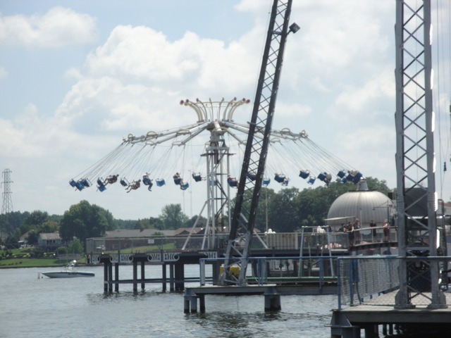
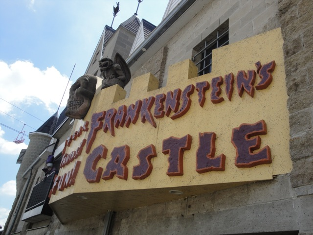
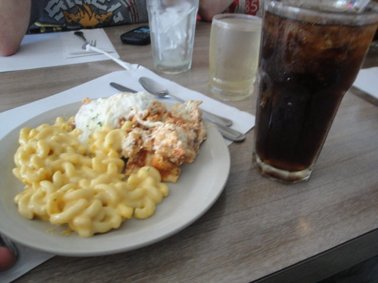
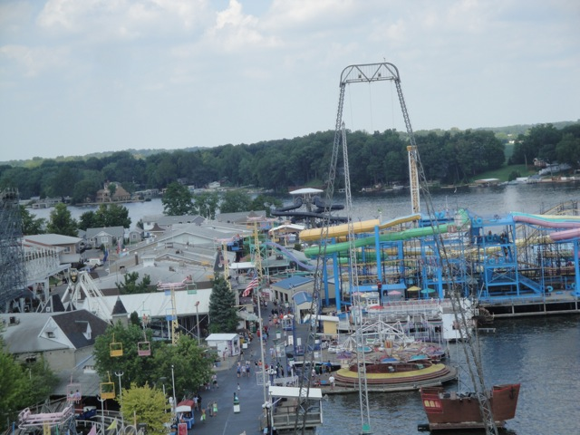

Indiana Beach is a very interesting park. The park first originated as a small family owned park with a lot of charm. However, in 2008, the park was bought out by Morgan R.V Company and the park was interesting since then. When I was there, I had mixed feelings about this park. On the positive side, this park has a really nice setting and a really cool atmosphere. Despite the park being located in the middle of nowhere Indiana, there's still this rich atmosphere that the park has by being right on the shore of Lake Shafer. In fact, if it wasn't for the name Indiana Beach, you really wouldn't think that this park was in Indiana. Though if you really miss the Indiana feel, don't worry. Just leave the park and once you cross the suspension bridge and go past the trees, Indiana SMACKS you in the face with its nothingness and its corn. On top of that, the park has some pretty decent coasters, including Cornball Express and Steel Hawg, both of which, I personally loved. Now that we talked about some positives, lets talk about the negatives. You could really tell that the park used to have more charm to it. There's still some charm and atmosphere to the park, but you could tell that there used to be a lot more. There was a sense of deteriation. For the park still did have a nice atmosphere and some charm, you could tell that it was losing it. The employees there weren't exactly all that friendly and the park had some incredibly stupid rules *cough* skyride *cough*. And now let's go over the history of the park for the past decade, because....it's a roller coaster of a ride. I heard some really bad horror story visits since my initial. I know there was a strike at the end of 2011 that worried me at the time, but they seemed to have recovered were doing just for a couple years. When Morgan RV Park decided to move the chairswings over dry land, there was a public outcry over this and they kept them over water. But controversies kept plauging the park under Morgan RV Park Rule. They tried selling the park behind everyones back in 2012. Combine that with a controversy about how the park wasn't paying its fair share of taxes in 2013, and things were looking bad. Then on September 15, 2015, it was announced that starting in the 2016 Coaster Season, Apex Parks had bought the park and would be running it from now on. Well, considering how Morgan RV Park was screwing the park over, this had to have been a good thing. Well, things seemed to be doing fine under Apex Rule. I mean, I wasn't hearing much about Indiana Beach, but I tend to think that if I haven't heard from you, then you're probably doing fine. I know. Naive. But that's what I thought. Everything seemed fine until February 18, 2020, when the park literally out of the blue just announced "Meh. We're closing. We tried finding a new owner. But....nope. Oh well. SUPRISE BITCH!!! WE'RE CLOSING NOW!!! Too bad. So sad". This decision was so sudden that I remember being shocked discovering this news when checking my phone after work. Hell, that very day, I remember commenting on a Facebook post "What's your favorite defunct park?" and answering Geauga Lake because at the time, I had assumed that my only two options were that and Toshimaen (I am so glad that I included that park on my Japan Trip). But just a couple hours later, my choice was now Indiana Beach. =( Normally, I wouldn't even remember such a mundane thing. But learning just a couple hours later that Indiana Beach just randomly closed (SURPRISE BITCH!!!!) really makes details like that stand out. However, the story just gets crazier and crazier. So yeah. Apex claims that they couldn't find a new owner. Well....the city of Monticello was NOT happy about that since.....Indiana Beach is pretty mich the entire economy of the town. So they were desperate to get Indiana Beach a new owner. And what a surprise. Lots of people were interested in buying Indiana Beach. And by May, Indiana Beach not only found a new owner, but they're really treating the park right, buying Quimera from La Feria Chapultepec Magico (the story with that park is just f*cking depressing) and giving it another chance at life (Saving a old school Schwarzkoph automatically makes you cool in my book). So yeah. Apex was full of sh*t (So glad you guys went bankrupt). Sadly, their other big park, Martin's Fantasy Island, did not get a happy ending (Very bummed I missed that park. Silver Comet looked like a fun ride). So yeah. Between Indiana Beach getting a new chance at life, saving a Schwarzkoph, as well as having an owner who genuinely cares about the park and wants it to thrive, this is a priority on my next Midwest Trip.
Here are the reviews of all the Flat Rides at Indiana Beach. This park has a very interesting flat ride collection. The flat rides here consist of chairswings over the water, a falling star, some flyers, a music express, a paratrooper, some flying bobs, and a ferris wheel. Now most would not consider this to be a good flat ride collection. But these flat rides are just about the best of their type. They all run at very high speeds, run very long cycles, and their setting on the lake made then much more exciting. This makes these rides that much more interesting. And those are just on the flat rides I rode. The park also has a double shot, a tilt a whirl, a pirate ship, a scrambler, and a scrambler.

Best location on any chairswings and one of the best chairswings ever. =)
Dark Rides
As far as dark rides go, Indiana Beach actually has a decent collection. Well first off, there's Den of Lost Theives. This is nothing really special. Just your ordinary shooting dark ride. Even so, it's a lot of fun. But what really stands out in Indiana Beach is Frankenstein's Castle. This thing is amazing. You walk through several rooms and looked at all sorts of special effects. I know it's an upcharge, but damn. IT IS JUST SO F*CKING FUN!!! It can actually get kind of confusing, weird, and even sort of trippy inside. Maybe its just me, but I loved it. Yeah, it'll cost you $5.00. But its so good that it's totally worth it!!! =)

WORTH EVERY PENNY!!! DO NOT MISS!!!
Water Rides
I never rode any of the water rides at Indiana Beach, but I don't think I'm missing anything. Their log flume looks OK from photos. They also have a Splash Battle. This looked like nothing fun. Just sort of....standard. The Splash Battle has no theming. It was just plopped, so it didn't look like anything special.
Water Park
Yep, Indiana Beach does have a water park, but it doesn't seem like a particuarly good one. I mean, I'm sure it's fun and all, but it kind of seems...stuck in the 70s. All the slides seem standard, nothing at this water park seemed to pop, or even act like a normal water park. The entire thing kind of seems outdated. Wonder if the new owners will spend some time giving the water park some tender, loving, care this decade.
Dining
All right. Now if there's anything great at Indiana Beach that I forgot to mention, it was the dining. THE FOOD HERE IS REALLY GOOD!!! The food that they served throughout the park was really good. They have burgers, chicken, tacos, and it was all really good. None of it really seemed like typical amusement park crap. There's a lot of charm to this food. It's very boardwalkish, greasy, and tasty. And its actually decently priced too. I mean, it wasn't like Knoebels where it's so cheap you just want to pig out, but you don't feel ripped off like you do at most theme parks. Now at one place in the park, they also served Red Cream Soda. That is just f*cking awesome! That's a type of drink you'd expect to find at Rocket Fizz, not at an amusement park. And then we have the Sky Room. DAMN!!! This place served good food. The lasanga and the macaroni and cheese I had was just fantastic. Indiana Beach really knows how to make these foods very rich. There's so much cheese and sauce packed into each bite. Now the only bad thing I have to say about the food at Indiana Beach was the complimentary water they served us in the Sky Room. Normally, water is just water, but here, it had some brownish tint to it that just didn't make it look safe. Are they serving us water from Lake Shafer? Is the water really that polluted in Monticello, Indiana? Is it always like that or was it just a one time thing that the water looked like that? Did the water just look that way due to the lighting in the Sky Room? Did an employee spill something in it that day? Am I being paranoid about water that just looks a little different? Well, whatever. I never took a sip of that water and just stuck to Coke.

Yeah. That lasanga and mac'n'cheese is just as good as it looks (Oh, and you can take a look at the brownish water).
Theming and Other Attractions
Here are the reviews of all the other stuff at Indiana Beach. Well as for theming, there isn't much actual theming, but there is atmosphere to this park. A very very rich atmosphere to this park. Like I said before, the setting on Lake Shafer is just fantastic and very un-Indiana like. It really helped the park feel like a carnival. The wind helped make all the flat rides just more fun and exciting, and just makes the park cooler and more relaxing. The hand painted signs are another little feature from the park that I loved. It gives the park much more charm and its own identity. Now as for other attractions, the park did have a lot of games to play, including Fascination, which is very rare, and Indiana Beach is one of the few places you could play it. Now....F*CK!!! I can't think of any other places you can play it aside from Knoebels. It also has many arcades, a ropes course, and with it's location, it's a good one.

Yeah. Love the setting.
In Conclusion
Indiana Beach is a very interesting park. It still had a decent amount of charm when I visited and I could tell that this park was really good. The setting on Lake Shafer, the hand painted signs, the coasters, the breeze, the location of the flat rides, the food, it was all great and all of which made for a fun time. Sure, at times the park did frustrate me with employees who didn't seem to be all that polite or some incredibly stupid rule that boggled your mind, but for the most part, it was pretty cool. And with the new owners, I actualy think that they are going to bring back all of the charm that made Indiana Beach so fun, and really put a ton of love into this park. It almost seems like they're trying to make Indiana Beach the Knoebels of the Midwest. And that is a goal I can get behind 100%. I'm looking foreward to returning to this park hopefully sometime soon.
Enthusiast FAQs.
*Are there kiddy coaster restrictions? - I can't say for sure since it didn't exist on my last visit, but I don't think so.
Tips
*Don't avoid the flat rides because they're just a scrambler/paratrooper/falling star/etc. They run great programs and are really fun on the beach.
*Ride Lost Coaster first thing in the morning. Later in the day, it'll most likely either be closed, or have a 2.5 hour line.
*Be sure to look for Red Cream Soda.
*Do Frankenstein's Castle. It's worth your time and money.